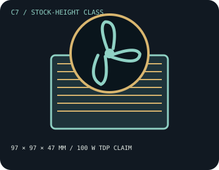

[ INDIVIDUAL COMPONENT // COOLING ]
CRYORIG C7
A 47 mm, four-heatpipe top-flow cooler with a 92 mm PWM fan and a manufacturer-stated 100 W TDP rating.

IDENTIFICATION: This record covers the original C7 socket/hardware set. Later optional brackets or C7 variants are separate from the listed original mounting support.
Manufacturer specifications
| Overall dimensions | 97 × 97 × 47 mm with fan; four 6 mm heatpipes. The 92 × 92 × 15 mm fan sits above the heatsink. |
|---|---|
| Fan / thermal limits | 92 mm PWM fan, 600–2,500 RPM ±10%, 40.5 CFM, 2.8 mm H₂O, 30.0 dBA maximum, 0.2 A. CRYORIG specifies 100 W TDP for this model; this is not a guarantee for every CPU boost behavior or enclosure. No radiator. |
| Mounting kit and sockets | Use the original C7 mounting system. CRYORIG lists Intel LGA 1151/115x and AMD FM1, FM2/+, AM2/+, and AM3/+ for this original kit. Do not assume native LGA1700, LGA1851, AM4, or AM5 support; require an explicitly compatible official kit before using later sockets. |
| Clearance caveats | Provide 47 mm vertical height and 97 × 97 mm around the socket. CRYORIG describes the design as having no RAM-height limit, but motherboard layout, DIMM latch access, nearby VRM parts, PCIe devices, and case panel clearance still require a physical check. |
Safe installation and maintenance
Use the C7 guide and hardware for the exact socket. The original published socket list is legacy; do not reuse mounting screws or infer compatibility from similar hole spacing. Verify actual cooler/case clearance, fan rotation, and CPU temperature under the intended load.
- Disconnect AC power before installation or cleaning.
- Remove dust gently and renew thermal compound after lifting the cooler from the CPU.
Manufacturer sources
- CRYORIG — C7 product announcement and specificationsModel dimensions, fan values, TDP rating, and original socket list.
- CRYORIG — C7 installation guide (PDF)Manufacturer mounting instructions for the C7.
Static catalog reference only; verify availability of official mounting hardware for the target socket before purchase.